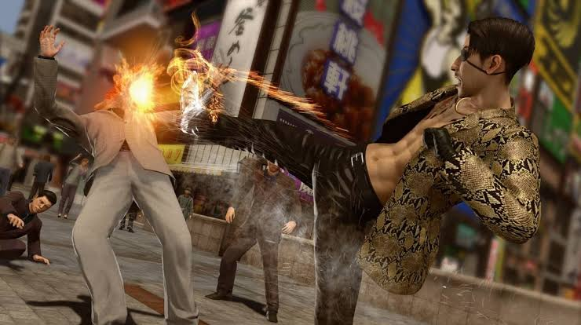
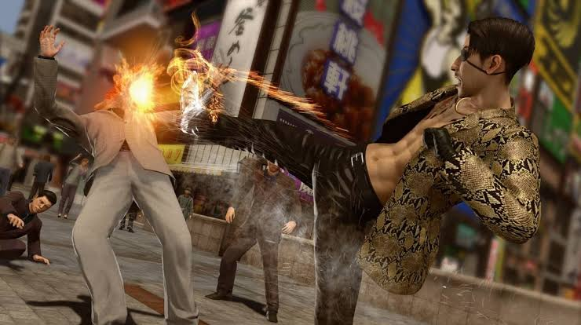
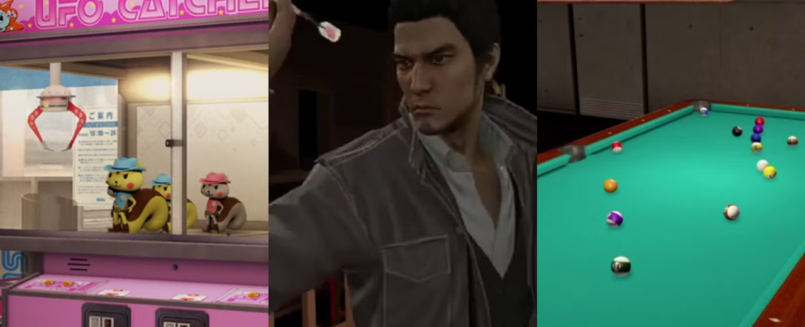
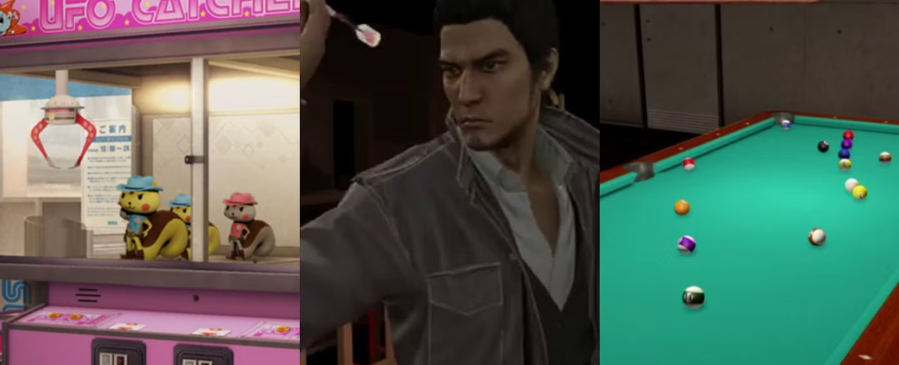

.png)
.png)
Like a Dragon (Japanese: 龍が如く, Hepburn: Ryū ga Gotoku), formerly known outside of Japan as Yakuza, is a video game franchise by Sega. It incorporates elements of the action-adventure, beat 'em up, and role-playing genres.
Each installment is typically a crime drama, with plot lines inspired by yakuza films and pre-millennial Japanese crime dramas.
.png) 

In most of the Yakuza/Like a Dragon games, it features a mixture of combat, story, and exploration. The main character randomly encounters foes on their path, triggering combat. In fights, the player character uses hand-to-hand combat, using combos, grabs, throws, and finishing moves, and some games allow the player character to select from and use multiple fighting styles.
Players can also grab nearby objects on the street to beat the enemies. Despite the emphasis on hand-to-hand combat, weapons can be obtained and used by grabbing weapons dropped by the enemies or purchasing them from weapon shops.
Battles end quicker by finishing the enemies using powerful moves called Heat Actions, which require the filling of the 'Heat Gauge' to become usable. Some of these tend to include quick time events. As the player character fights, they gain experience points that can be used to increase their stats and become a stronger fighter.
.jpg)
.jpg)
The eighth and ninth installments in the series, Yakuza: Like a Dragon and Infinite Wealth, include a new battle system where the player character recruits party members to fight alongside them in turn-based role-playing game battles against enemies, and to play alongside them in mini-games.
Due to its success, Sega has confirmed that future titles will continue to use turn-based gameplay. However, there is no solid plan—the type of gameplay is chosen depending on what is considered to be best suited for the story.
Yakuza offers a variety of side content as a refreshment for players after playing the main story, while offering rewards for completing each of its side content, serving as an upgrade to proceed further in the main story.
.jpg) 

One of the series' standout features is the numerous minigames players can engage with outside of the main story. These minigames add variety, humor, and depth to the experience. In essence, the Yakuza series is like a treasure trove of games within a game.
These minigames provide hours of entertainment, often serving as humorous distractions from the main storyline. Many players enjoy the variety and depth these minigames add, making Yakuza a unique blend of narrative and open-world fun.
.jpg)
In the Yakuza series, substories (sometimes called side quests) are a core element that enriches the world and provides players with a variety of unique and often humorous experiences outside of the main storyline. These side quests usually involve helping out NPCs in the game's open world or getting involved in strange and quirky situations.
.jpg)
Substories are essentially optional side quests that can be found while exploring the world. They usually revolve around helping people, solving problems, or getting involved in strange scenarios. While some are lighthearted and comedic, others can explore deeper themes and provide insight into the world of Kamurocho (or whatever city the game is set in). Many of these quests also unlock rewards, such as money, experience points, or even rare items.